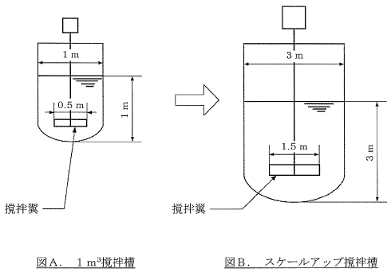

平成24年度 問31 化学プロセス
一般的に撹拌所要動力PはP=Npρn3d5（Np：動力数、ρ：液密度、n：回転数、d：翼径）で表示される。今、図Aの1m3撹拌槽を基に相似形として図Bのとおりにスケールアップした。図Aの撹拌槽における撹拌所要動力は撹拌回転数150 rpmのとき、0.75kWであった。スケールアップ槽撹拌翼の回転数を50 rpmとしたとき、スケールアップ槽撹拌機の撹拌所要動力として最も近い値はどれか。
ただし、Npは一定とし、撹拌機減速機、及びシール部等の機械的な消費動力は考慮しないものとする。
①
5 kW
②
7 kW
③
9 kW
④
11 kW
⑤
13 kW

正答
② 7 kW
まずスケールアップ前の動力数を求めます。液密度はρの定数として扱います。0.75=Npρ × 1503 × 0.55となり、Np＝0.75 / (ρ × 1503 × 0.55)です。
動力数は一定のため、スケールアップ時の撹拌所要動力P＝{0.75 / (ρ × 1503 × 0.55)} × ρ × 503 × 1.55＝6.75 kWです。